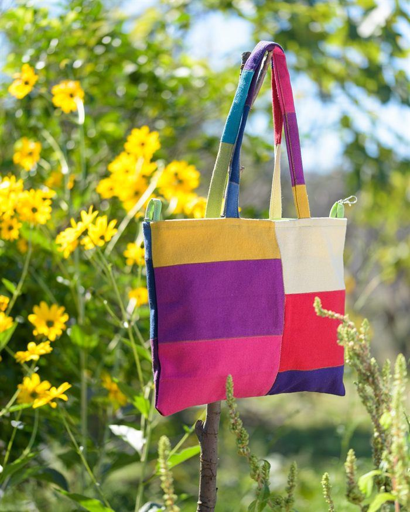
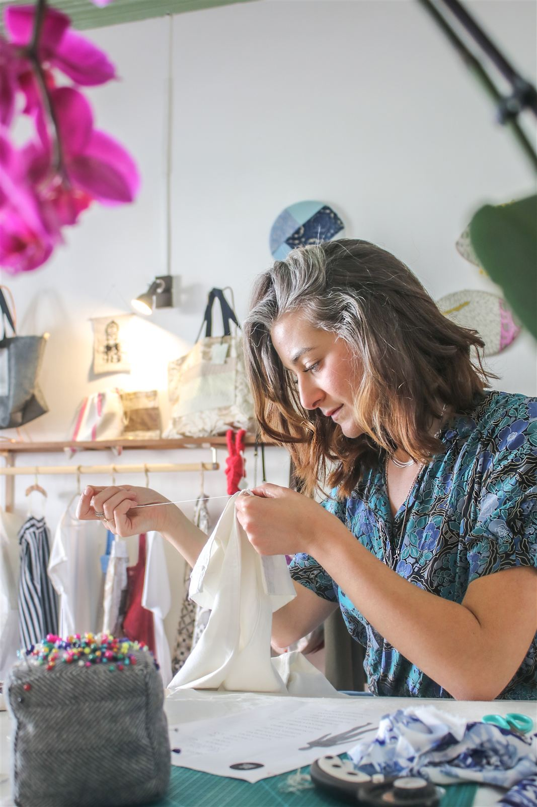
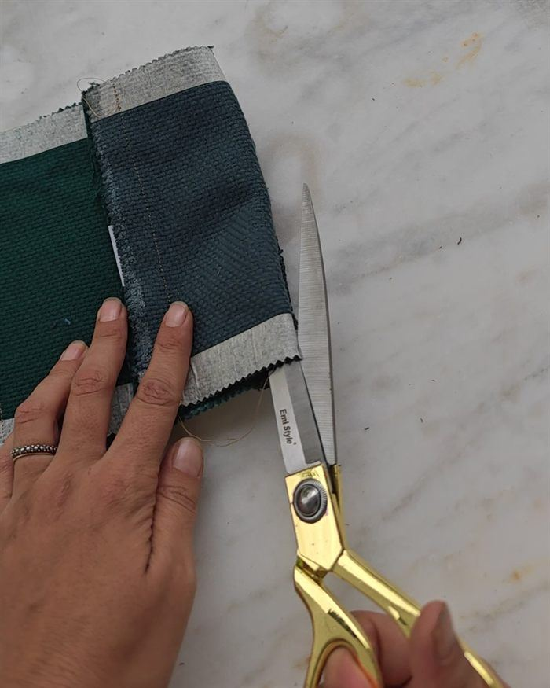
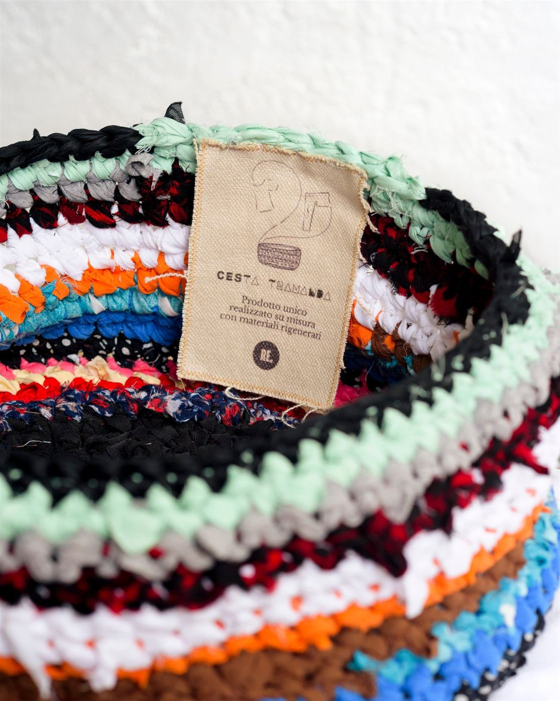

Sacs et pièces uniques
Sacs, pochettes et accessoires cousus un par un dans des échantillons d'ameublement : des tissus neufs et de qualité, retirés en fin de collection.
Les proposer en boutique →Je suis Greta Naselli, artiste textile. Dans mon atelier à la campagne, au pied de l'Etna, je transforme des échantillons d'ameublement en sacs et en pièces uniques. J'enseigne aussi à coudre, réparer et transformer ses vêtements.


Années d'enseignementJ'apporte la couture et l'upcycling dans les écoles, les organismes et les associations.
Chaque pièce est uniqueChaque sac naît de tissus différents et ne se répète pas.
Production en sérieTout passe entre mes mains, dans mon atelier à la campagne.

Sacs, pochettes et accessoires cousus un par un dans des échantillons d'ameublement : des tissus neufs et de qualité, retirés en fin de collection.
Les proposer en boutique →
Des vêtements chargés de souvenirs, découpés en bandes et crochetés en panier. En italien, tramandare veut dire transmettre.
Me demander des informations →
Pour les écoles, théâtres, festivals et structures culturelles : couture, réparation et upcycling, en anglais ou en italien, matériel compris.
Découvrir les ateliers →
Je m'appelle Greta Naselli et j'ai fondé Repunto. Je suis artiste textile, consultante en mode durable et professeure de couture zéro déchet.
J'ai étudié les Techniques et cultures de la mode à l'Université de Bologne, campus de Rimini, et le modélisme à la Secoli Next Fashion School de Bologne. Depuis 2022, j'anime l'atelier d'upcycling « Mode, théâtre, durabilité » au Teatro Duse de Bologne.
Je vis dans la campagne sicilienne, où je cultive ma vision entre terre, fils et histoires : gestes lents, vêtements transformés, permaculture et agriculture naturelle.
Repunto n'est pas seulement une marque, mais une philosophie qui réunit la récupération, la créativité et l'art de faire. Chaque objet est une réinterprétation de la matière, un acte de beauté […]Elle Italia · Cristina Ropa (traduit de l'italien)
Ce sont des échantillons d'ameublement : des tissus neufs avec lesquels les entreprises présentent leurs collections. Quand la collection change, ils sont retirés. Je les récupère et les transforme en pièces uniques.
La boutique en ligne livre uniquement en Italie. J'expédie aux boutiques et revendeurs dans toute l'Europe.
À la campagne, au pied de l'Etna, près de Regalbuto, en Sicile.